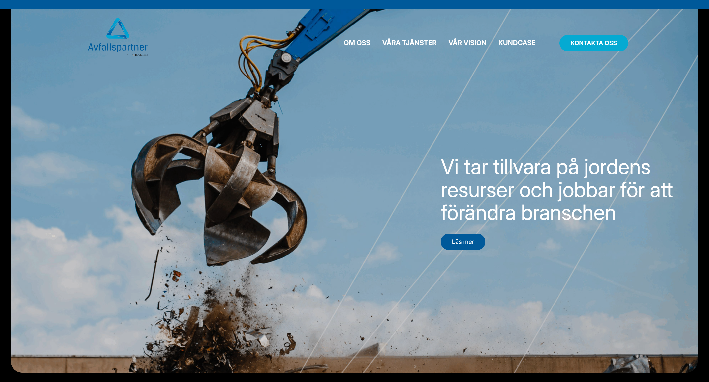

Avfallspartner
A content-rich site for a circular-economy company, built to explain a broad service range and prove it with real customer cases.
Visit live site
Avfallspartner builds circular, sustainable solutions for surplus soil and construction material, matching building projects with sites that need the material instead of sending it to landfill.
The site had to communicate a wide, fairly technical service range, from remediation and water treatment to demolition and material recycling, while carrying a strong sustainability message and backing it with real projects and ISO certifications.
This was the most content-heavy of the three client sites: eight service areas, a vision statement, multiple customer cases with their own imagery and outcomes, testimonials, certifications and several contact people. All of it needed to stay readable and well-paced rather than overwhelming, and remain editable through a CMS as new cases are added.
-
01
Responsive, content-rich layout
Built a layout that carries a large amount of content with clear rhythm and breathing room, staying scannable from desktop down to mobile.
-
02
Services grid
Structured the eight service areas into an icon-led grid, so a broad and technical offering reads at a glance.
-
03
Customer cases & testimonials
Laid out real project cases with imagery, key outcomes and client quotes, giving the sustainability message concrete proof.
-
04
Vision, certifications & contact
Presented the vision statement, ISO certifications and multiple contact people clearly, so credibility and next steps are easy to find.
-
05
Performance & accessibility
Kept a heavy page lightweight and accessible with semantic markup, optimised imagery and lazy loading.
The result turns a complex, technical offering into a clear and convincing story, backed by real cases and certifications, and gives the team a structure they can keep growing as new projects land.
Note to self: add real results here if you have them, for example load-time or Lighthouse scores, or a quote from the client or your supervisor at Webblix. Concrete numbers make this section land.